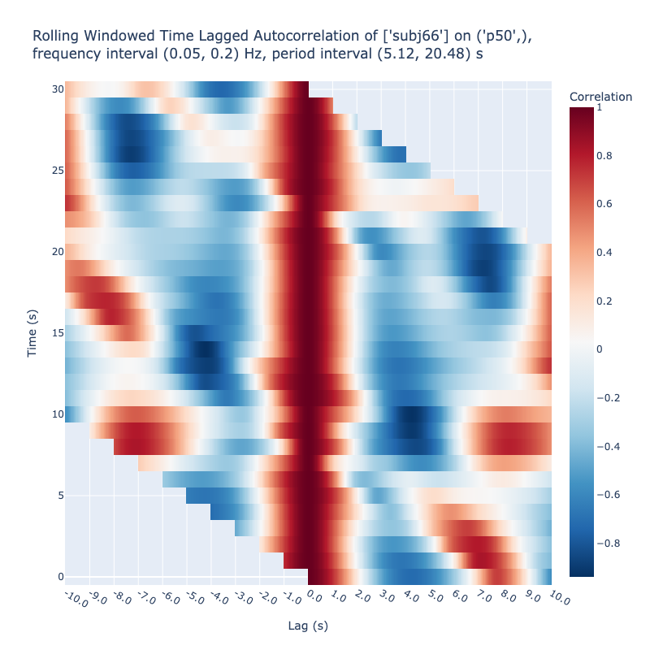
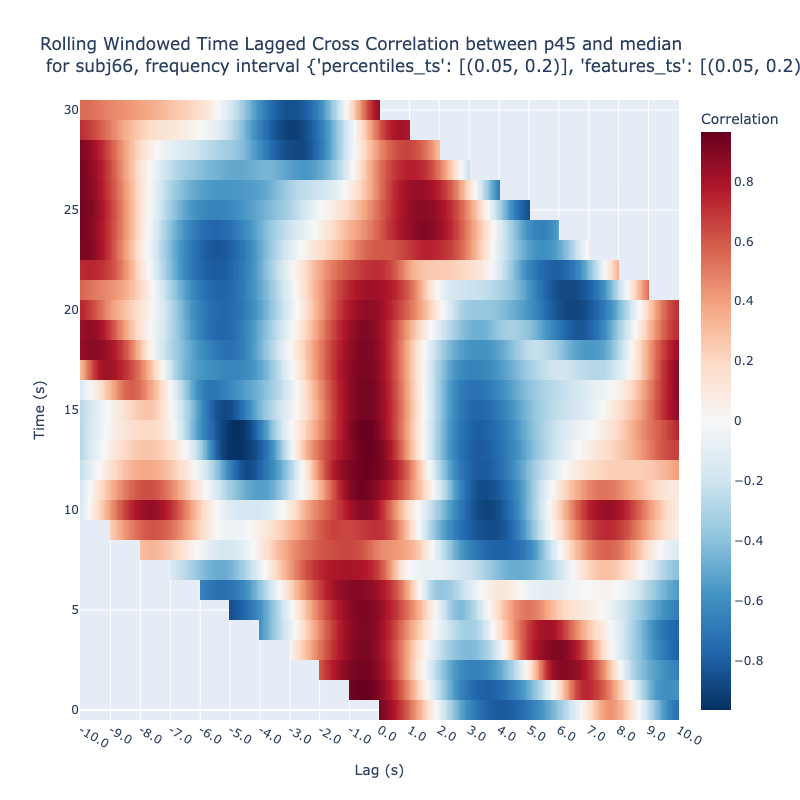
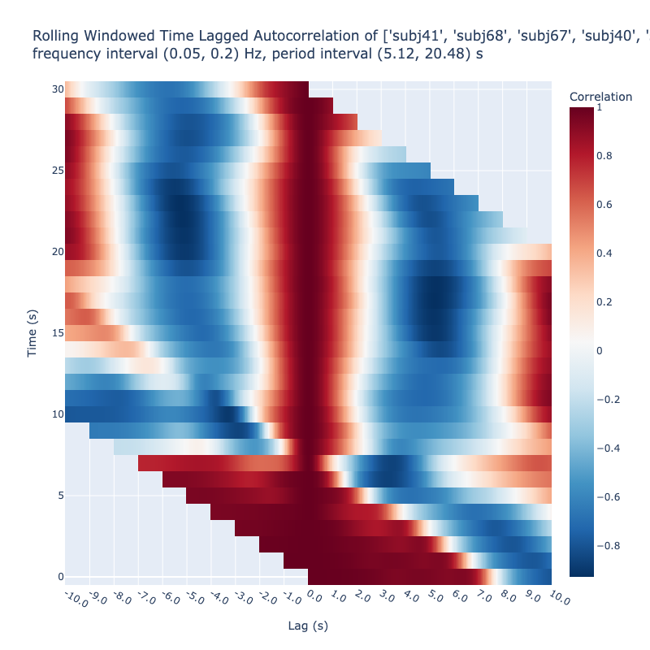
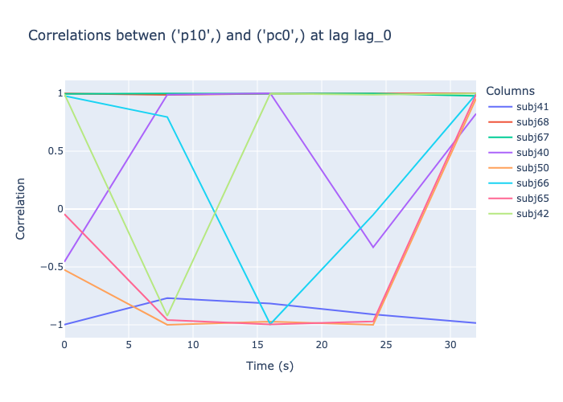

from nbdev_fhemb.decomposeEmb_ex import wavelet_factoryAnalyze Lagged Cross Correlations of Embeddings of Wavelet-based Subbands
We use both color maps and time‑series plots for visual analysis. The lagged cross‑correlation map represents correlation as a function of both time and lag; fixing the lag collapses this 2‑D surface into a 1‑D series that shows how the correlation at that specific lag evolves over time. A lagged cross‑correlation time series at a fixed lag is therefore just the vertical slice of the full map taken at that lag.
Lagged Cross Correlation Color Map
We demonstrate the usage of the lagged_correlations method of the EmbeddingCollection class. It can be used in three ways:
auto-correlations of a single feature of a subject
between two features of a subject or
between two subjects on the same feature.
Auto-Correlations
from nbdev_fhemb.embedding_ex import dg0, pcadg0.face_t.project(
subjs=[66], # Subject of interest
features=['p50'], # Features to be cross-correlated
wdfactory=wavelet_factory, # Specify the wavelet factory for decomposition
fbands=[1,2], # Frequency bands to include in the reconstruction
).plot_lagged_correlations(
twin=250, # Time window in frames
step=25, # Step size in frames
max_lag=250, # Maximum lag in frames
)
Cross-Correlations between two features
dg0.face_t.project(
subjs=[66], # Subject of interest
features=['p45', 'median'], # Features to be cross-correlated
wdfactory=wavelet_factory, # Specify the wavelet factory for decomposition
fbands=[1,2], # Frequency bands to include in the reconstruction
).plot_lagged_correlations(
twin=250, # Time window in frames
step=25, # Step size in frames
max_lag=250, # Maximum lag in frames
)
Note
Note that cross-correlation between median and 50-percentile would be effectively autocorrelation. It is expected that the cross-correlation between the median and 45-percentile have a similar pattern.
Cross-Correlations between two subjects
dg0.face_t.project(
subjs=[40,65], # Specify subjects to be cross-correlated
features=['pc0'], # on a single feature - principle component 0
pcfactory=pca, # Specify the PCA
wdfactory=wavelet_factory, # Specify the wavelet factory for decomposition
fbands=[1,2], # Frequency bands to include in the reconstruction
).plot_lagged_correlations(
twin=250, # Time window in frames
step=25, # Step size in frames
max_lag=250, # Maximum lag in frames
)
Lagged Cross Correlation Time Series
dg0.face_t.project(
features=['pc0', 'p10'], # on a single feature - principle component 0
pcfactory=pca, # Specify the PCA
wdfactory=wavelet_factory, # Specify the wavelet factory for decomposition
fbands=[1,2], # Frequency bands to include in the reconstruction
).lagged_correlation_graph(
twin=50, # Time window in frames
step=200, # Step size in frames
max_lag=0, # Maximum lag in frames
)
Numeric Values
dg0.face_t.project(
subjs=[40,65], # Specify subjects to be cross-correlated
features=['pc0'], # on a single feature - principle component 0
pcfactory=pca, # Specify the PCA
wdfactory=wavelet_factory, # Specify the wavelet factory for decomposition
fbands=[1,2], # Frequency bands to include in the reconstruction
).lagged_correlations_df(
twin=50, # Time window in frames
step=200, # Step size in frames
max_lag=2, # Maximum lag in frames
){'df': {'subj40': lag_-2 lag_-1 lag_0 lag_1 lag_2
0.0 NaN NaN 1.0 0.989073 0.954361
8.0 0.999988 0.999997 1.0 0.999998 0.999991
16.0 0.999897 0.999975 1.0 0.999979 0.999927
24.0 0.997815 0.999477 1.0 0.999525 0.998202
32.0 0.948537 0.986760 1.0 0.987126 0.951693,
'subj41': lag_-2 lag_-1 lag_0 lag_1 lag_2
0.0 NaN NaN 1.0 0.991794 0.963841
8.0 0.979360 0.995503 1.0 0.996664 0.988506
16.0 0.999940 0.999986 1.0 0.999988 0.999955
24.0 0.999822 0.999942 1.0 0.999921 0.999651
32.0 0.999111 0.999767 1.0 0.999749 0.998964,
'subj42': lag_-2 lag_-1 lag_0 lag_1 lag_2
0.0 NaN NaN 1.0 0.999077 0.996650
8.0 0.999496 0.999867 1.0 0.999858 0.999424
16.0 0.999602 0.999907 1.0 0.999923 0.999735
24.0 0.999587 0.999891 1.0 0.999886 0.999554
32.0 0.999935 0.999983 1.0 0.999982 0.999925,
'subj50': lag_-2 lag_-1 lag_0 lag_1 lag_2
0.0 NaN NaN 1.0 0.999170 0.997019
8.0 0.998631 0.999697 1.0 0.999764 0.999159
16.0 0.996607 0.999274 1.0 0.999477 0.998277
24.0 0.999805 0.999941 1.0 0.999926 0.999685
32.0 0.998601 0.999635 1.0 0.999633 0.998597,
'subj65': lag_-2 lag_-1 lag_0 lag_1 lag_2
0.0 NaN NaN 1.0 0.999212 0.997139
8.0 0.999919 0.999980 1.0 0.999982 0.999932
16.0 0.999918 0.999980 1.0 0.999982 0.999937
24.0 0.993202 0.998334 1.0 0.998477 0.994373
32.0 0.997527 0.999378 1.0 0.999364 0.997415,
'subj66': lag_-2 lag_-1 lag_0 lag_1 lag_2
0.0 NaN NaN 1.0 0.999900 0.999574
8.0 0.944694 0.986177 1.0 0.987746 0.955539
16.0 0.998483 0.999648 1.0 0.999711 0.998996
24.0 0.889064 0.971306 1.0 0.972129 0.895569
32.0 0.997580 0.999368 1.0 0.999362 0.997549,
'subj67': lag_-2 lag_-1 lag_0 lag_1 lag_2
0.0 NaN NaN 1.0 0.999779 0.999174
8.0 0.997459 0.999451 1.0 0.999588 0.998559
16.0 0.999778 0.999941 1.0 0.999940 0.999773
24.0 0.999235 0.999796 1.0 0.999786 0.999157
32.0 0.998875 0.999701 1.0 0.999659 0.998541,
'subj68': lag_-2 lag_-1 lag_0 lag_1 lag_2
0.0 NaN NaN 1.0 0.999543 0.998323
8.0 0.999827 0.999955 1.0 0.999955 0.999823
16.0 0.999930 0.999982 1.0 0.999983 0.999935
24.0 0.999873 0.999959 1.0 0.999944 0.999754
32.0 0.996704 0.999186 1.0 0.999201 0.996822}}